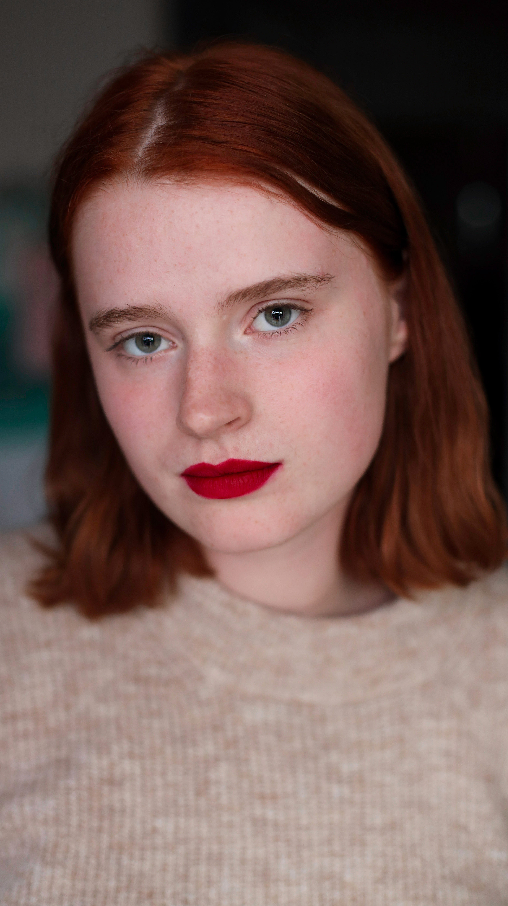
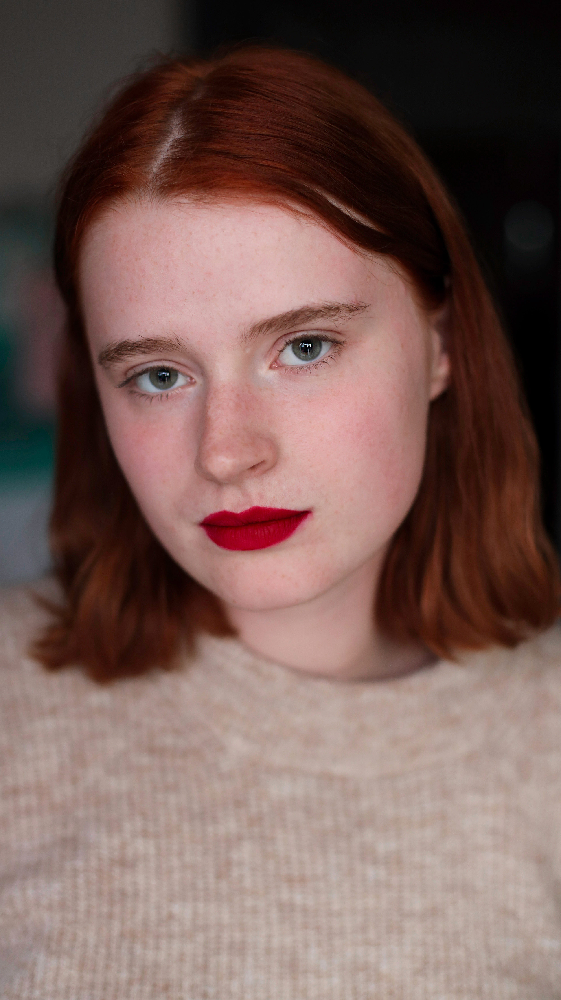

Tourné en solo, 1'35" de bonheur est un court métrage expérimental d’une minute et trente-cinq secondes. Le noir blanc et la musique donnent un aspect mélancolique, triste du bonheur. Le bonheur étant très souvent associé avec la joie, il est étrange de le voir mélangé à la tristesse. Le bonheur est un équilibre entre plusieurs émotions, il n’en exclu aucune, à bras ouvert, il les accueillent unes à unes. Il arrive qu’une émotion prenne parfois le dessus, et mette à mal le bonheur.
 
